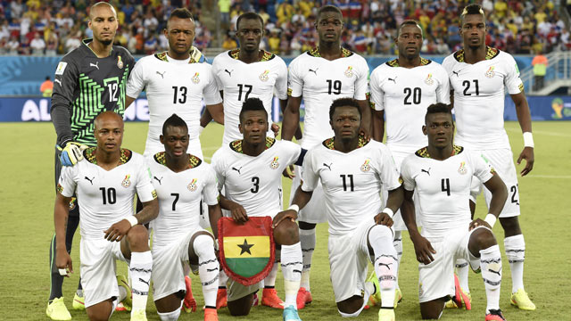

Ranking FIFA: 61° (octubre 2022).
¿Cómo se clasificó al Mundial? Venció en la llave decisiva a Nigeria tras empatar 1-1 en el resultado global, al imponerse por su gol como visitante.
Rendimiento en 2021 (G-E-P): 5-3-2 (11 GF, 6 GC, +5)
Rendimiento en 2022 (G-E-P): 5-5-5 (16 GF, 17 GC, -1)
Jojo Wollacott; Denis Odoi, Daniel Amartey, Alexander Djiku, Baba Rahman; Idrissu Baba, Thomas Partey, Mohammed Kudus; Jordan Ayew, André Ayew, Kamaldeen Sulemana.
Nacionalidad: camerunés
Edad: 47 años.
Contratado: 9 de febrero de 2022.
Récord en el cargo (G-E-P): 5-4-2.
Títulos en el cargo: Ninguno.
Resultado más notable: 1-1 ante Nigeria en la 3° Ronda de las Eliminatorias Africanas (clasificó por el gol de visitante).
1930 Uruguay -
1934 Italia -
1938 Francia -
1950 Brasil -
1954 Suiza -
1958 Suecia -
1962 Chile -
1966 Inglaterra -
1970 México -
1974 Alemania -
1978 Argentina -
1982 España -
1986 México -
1990 Italia -
1994 Estados Unidos -
1998 Francia -
2002 Corea y Japón -
2006 Alemania 13°
2010 Sudáfrica 7°
2014 Brasil 25°
2018 Rusia -
